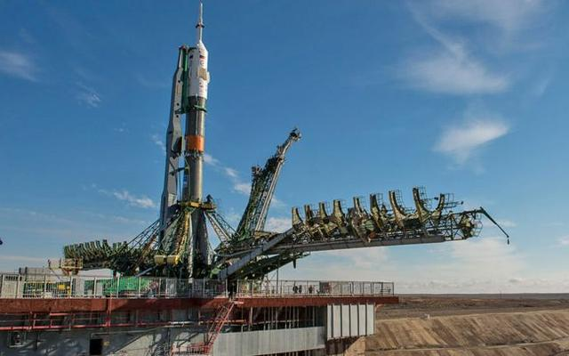
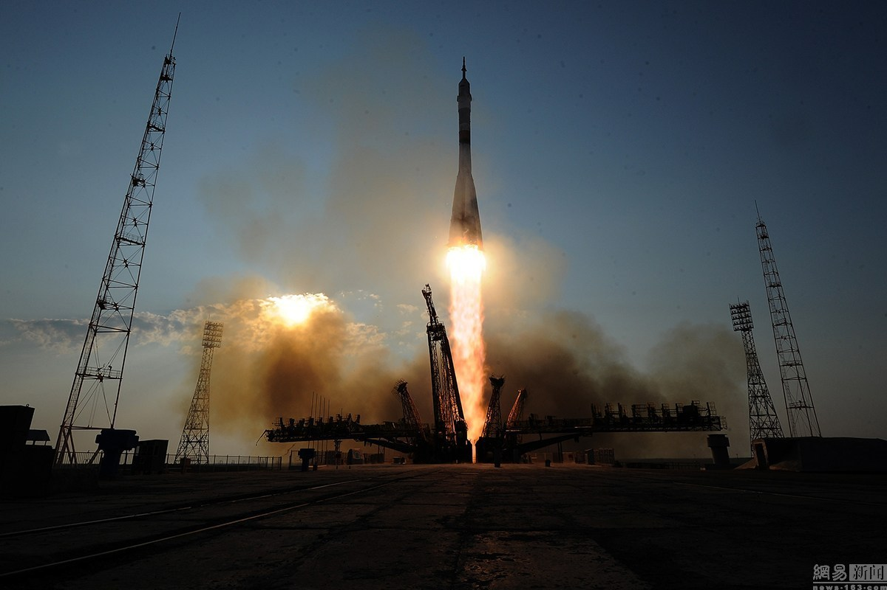

2020年5月19日
拜科努尔航天中心
自太空时代开始以来，俄罗斯一直是太空探索的强国。1961年，前苏联将尤里·加加林发射到太空， 标志着第一个进入太空的人类。今天，俄罗斯仍在拜科努尔航天中心发射宇航员，并在国际空间站接收宇航员。 以下是俄罗斯航天领域一些主要地点的简短介绍。

人类太空飞行的开始
1961年4月12日，尤里·加加林从宇宙飞船发射升空拜科努尔航天中心当时位于苏联。 它的位置直到几年后才向世界披露。但近年来，情况发生了很大变化。1991年苏联解体后， 拜科努尔的国籍改为哈萨克斯坦。俄罗斯人现在以1.15亿美元租赁拜科努尔，持有俄罗斯签证的人被允许进入该地区。
